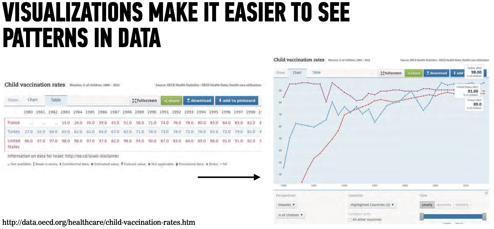
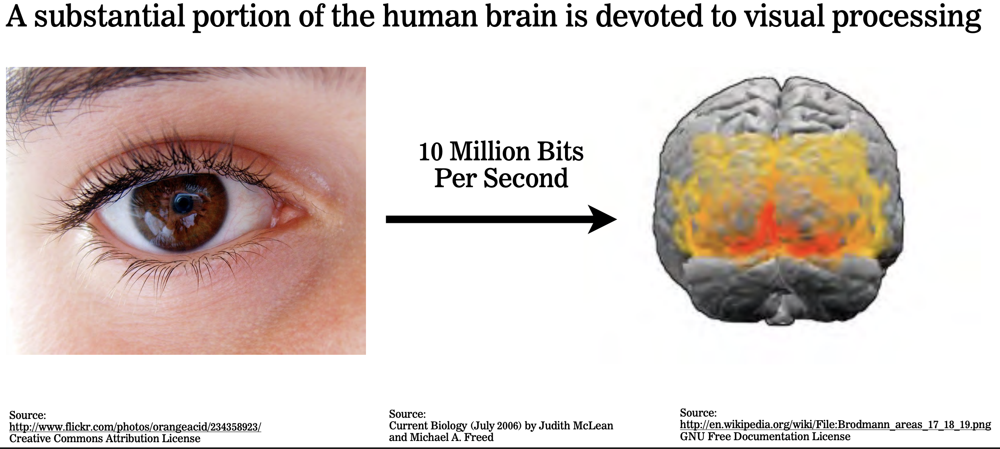

Text Visualization
LIS 4/5693: Information Retrieval and Text Mining
A Picture Is Worth a Thousand Words
Our brains have been evolved to be very efficient in visual analysis
Visualization helps us to:
absorbs information quickly
connect the dots
find patterns and outliers
acquire & share insights
attract audience



We are Wired for Visualization


Types of Visualizations

One-Variable Graph
Histogram shows distribution and concentration of data
Bar Plot compares the same variable across different groups and shows how the data distributed among the groups
Pie Chart shows the groups of what your data is made, allows you to see the most and least as well as everything in-between, and shows the distribution of the data among groups

Two-Variable Graph

Scatter Plot shows all the data on the plot, you can see the distribution, correlations, and the spread of the data between two variables
Line Plot similar to scatter plot but the points are connected, make it easier to see the trends and evolution
2D Histogram shows distribution of two variables related to each other
Box or Whisker Plot shows spread of data and statistical information
Three Variable Graph
Heatmap shows two variables and other quantity (amount, intensity, height) with a colormap
Multiple-variable bar plot shows multiple variables for multiple groups
3D Plot shows the 3rd variable on surface in 3D plot
For high-dimensional datasets, applying the t-Distributed Stochastic Neighbor Embedding (t-SNE) algorithm and alike to reduce the dimension.

Python Visualization Landscape

Some examples of Data Visualizations

Ecosystem of Data Visualization Tools

Data Visualization Resources